Meddbase is designed to handle a wide range of referral types, making it a versatile solution for managing patient care pathways. Whether your organisation needs to receive external referrals, send referrals to external providers, or manage internal referrals within your practice, Meddbase accommodates these processes seamlessly.
External referrals can be sent to other organisations, ensuring patients receive the necessary care outside your practice.
This article will explain the set up and process for sending referrals to external providers.
Outbound referrals work type
To ensure outbound referrals are configured correctly, the Outbound Referrals work type must be configured. To do this go to Admin > Work > Outbound Referrals.
In this area, configure how you expect outbound referrals to behave and provide default templates.
Before you can refer patients to external providers, you need to ensure that the external company (where the specialist clinician works) is set up correctly in Meddbase:
Ensure the Company is Saved in Meddbase
Make the Company Referrable
Set a Referral Contact
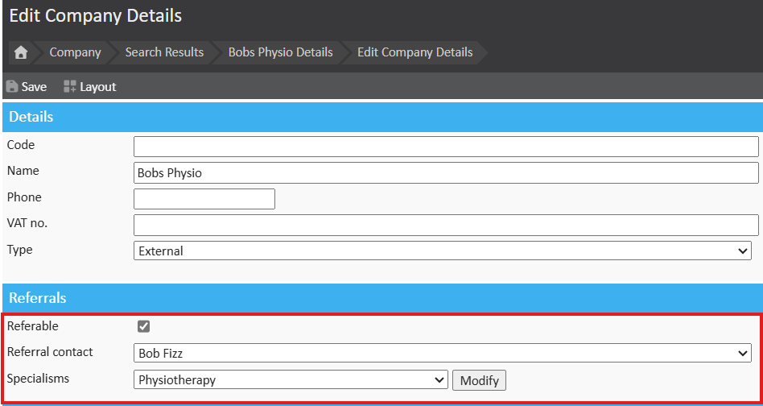
To make referrals quicker in the future, it's beneficial to create a demographic record for the specialist clinician (if known) and link them to the external company by setting their employer.
Create a Demographic Record for the Specialist Clinician
Under Referral Specialisms, click Modify to add the relevant specialisms that the clinician handles.
Choose from the list of specialisms available. This allows Meddbase to filter clinicians by specialism when you refer a patient.
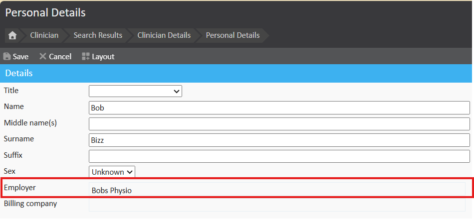
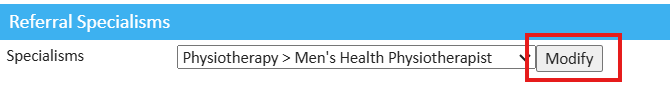
This will enable Meddbase to filter out the appropriate clinician when referring a patient to a specialist clinician.
Any user within the organisation can make an outbound referral . The referral will be initiated from within the patient record either during the consultation (By clicking the ‘Refer Patient’ action button at the bottom of a consultation form) or standalone (By selecting ‘Refer Patient’ from the patient home page).

Once the refer button has been clicked, a work item will be created in the ‘Outbound Referrals’ list found to the left of the start page. If at any point you close the referral you may find the work item here. If you decide you no longer require the referral, hit Cancel Referral. If you simply close the window the referral will remain in the current state.

When referring the patient, the first page you will be presented with is the specialism picker. From this page we can follow a number of routes.
Referring Based on Specialism (No Known Clinician)
On the left-hand side, you can search the entire catalogue of companies by selecting the required specialism.
Once you've ticked the relevant specialism, click Next to continue with the referral.
This process is useful when you don’t know the specific clinician but need to refer to a specialist within that specialism.
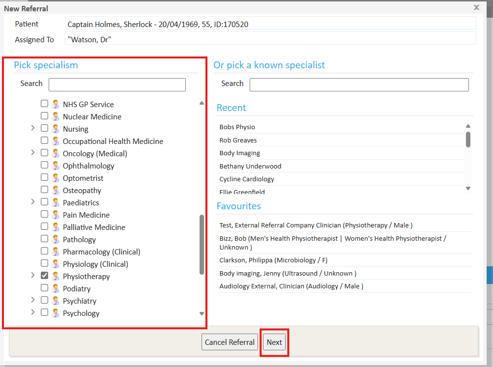
Referring to a Known Specialist
If you already know the clinician you want to refer to, use the ‘Pick a known specialist’ search option.
This will allow you to search for the clinician by name, streamlining the process if they are already set up as a record in the system.
Note: When the clinician is a Meddbase user, their name will appear with an icon, indicating they will receive the referral directly within their own Meddbase system.
If the clinician is not a Meddbase user, they will appear with a different icon, and the referral will be sent via email or print.
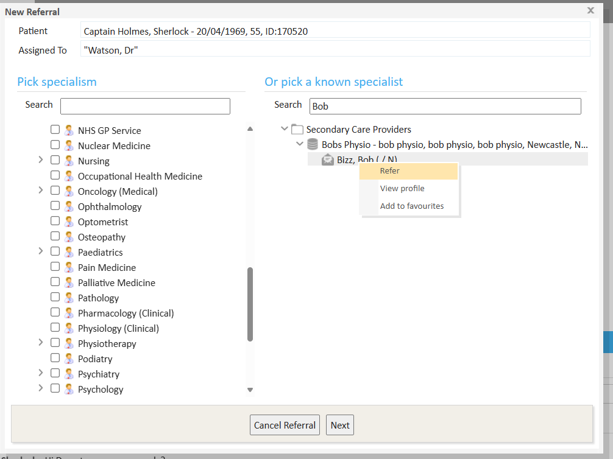
After you have selected the desired route, you will be presented with the next stage of writing the referral.
The next screen allows you to write a cover letter. This letter can be any length. For example, it could be as simple as asking for an appointment date to drafting a complex history of the case. You will also see options to the right. If you are using Meddbase to run primary care appointments, you can select parts of the medical record to be included in your referral. For example, the past medical history or prescription history, and this will be inserted directly into the document.
You will notice two options at the bottom of the referral cover letter page.
Click next to continue the referral.
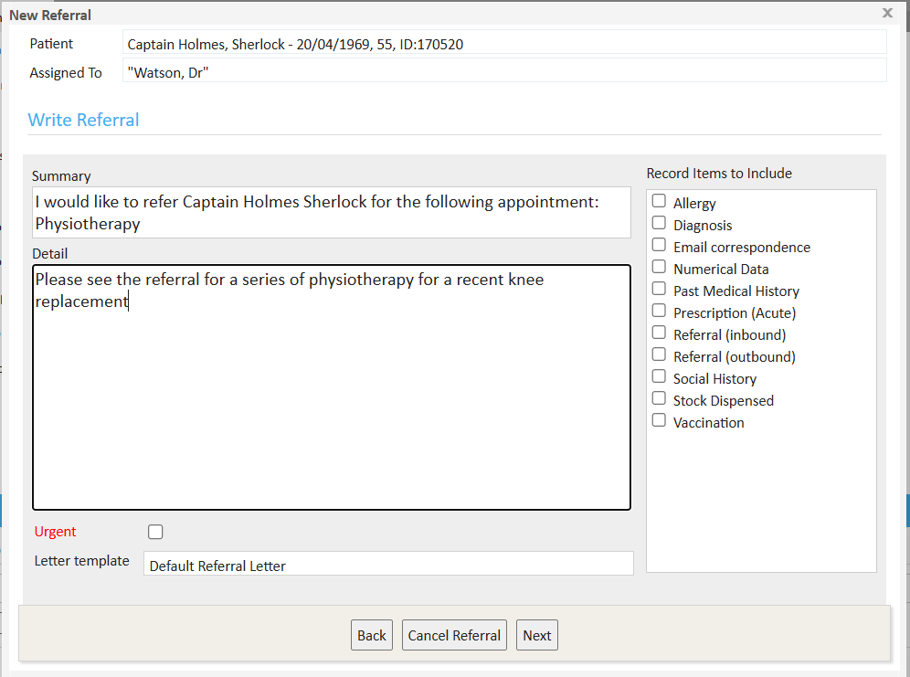
The next stage of the referral allows you to attach document to the referral. Documents displayed in the tree are currently attached to the patient record. Select a document to either preview it or attach it to the referral. Documents that will be sent with the referral are displayed on the right. To remove a document from the referral simply click on it from the list on the right.

Depending on the initial route chosen, after clicking Make Referral you will be presented with a new screen. If you picked a specialist, you will jump to the next step.
If you opted to make a referral via Specialism, you will be presented with different ways in which to refer. Click "Pick Secondary Care Provider".
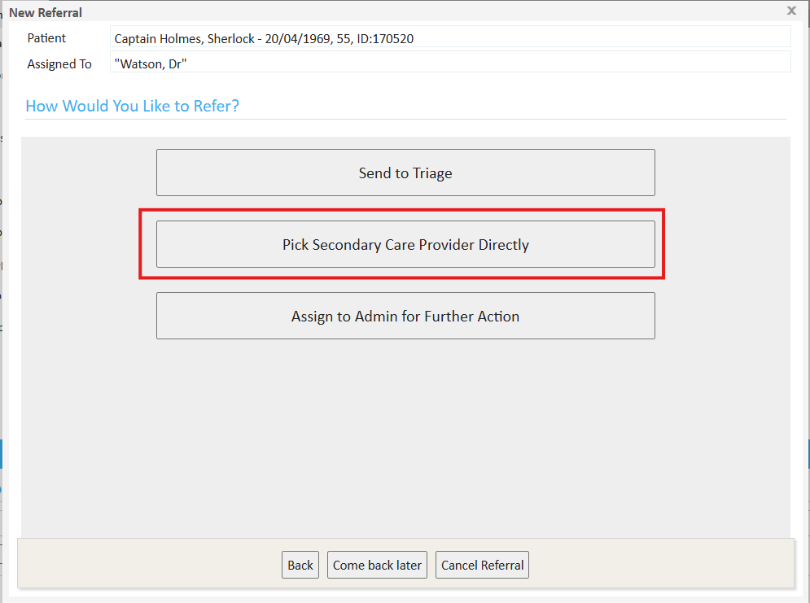
As this is an external provider, we will need to go via the email/print route. On the bottom left of the window, click on the green Can't find a direct provider? Click to try the email/print route.
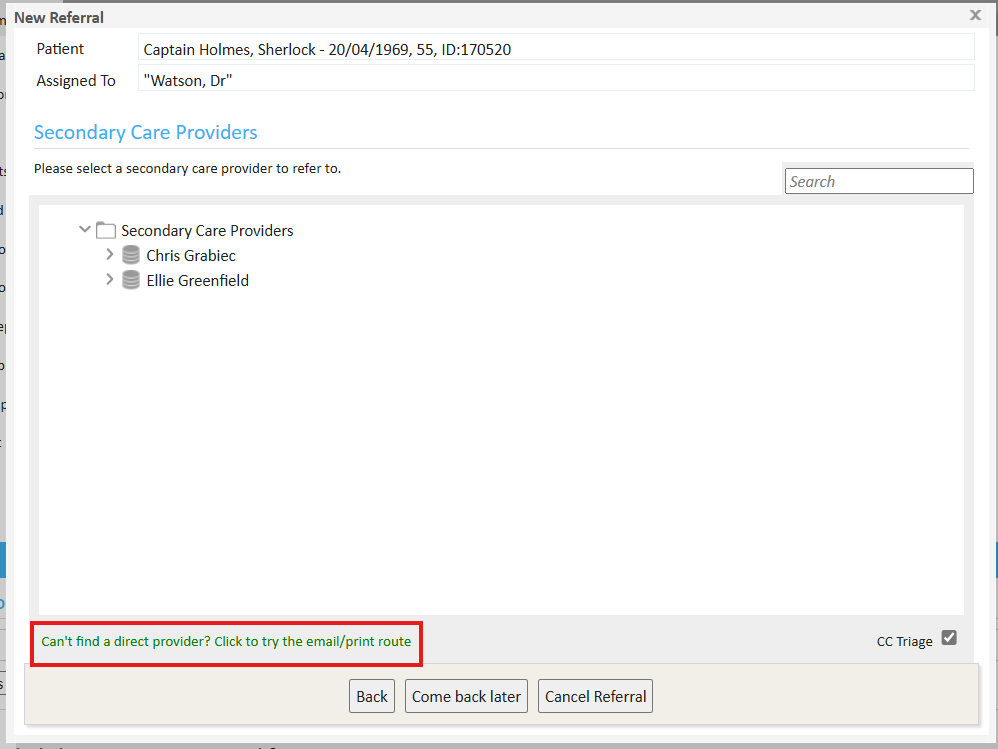
Then select the appropriate company and then Refer.
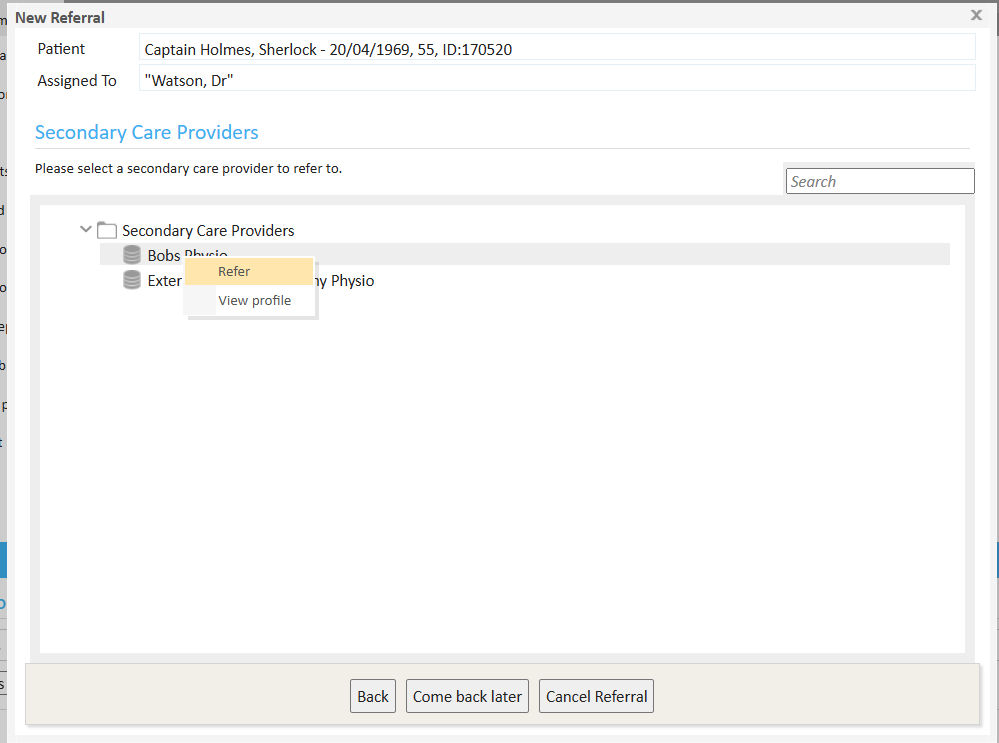
The next step is to Email the referral or Print the Referral letter to send manually.
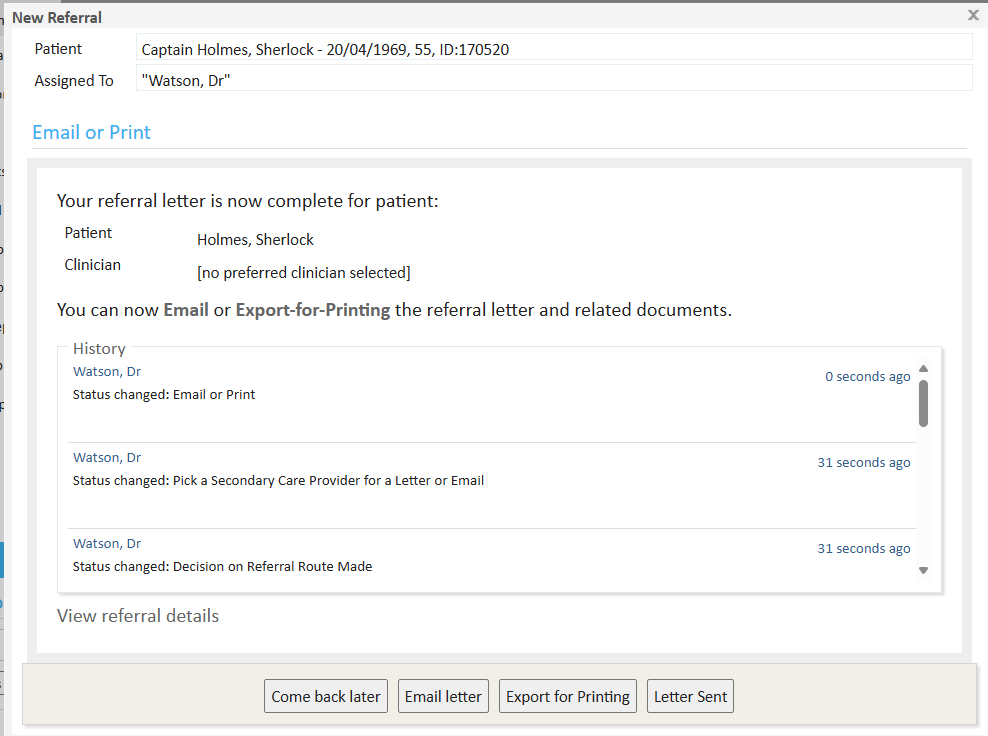
Click on "Email Letter":
This will generate an email that will be sent to the company’s Referral Contact. An email window will pop up with the referral contact as the recipient and the patient CC'd.
Modify the Subject and Body:
You will have the opportunity to alter the subject and add content to the body of the email. This allows you to include any necessary details about the referral.
Referral Letter Attachment:
The referral letter will be automatically attached as a secure attachment link, ensuring the information is sent safely and is easy to access for the recipient. To learn more, see Sending an attachment as a Secure Link.
Send the Referral:
After reviewing the email, click Send to forward the referral to the external provider.
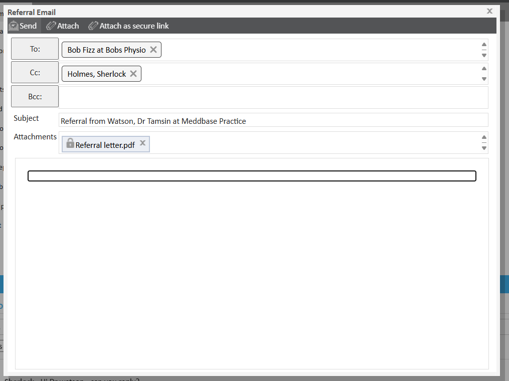
Once the email has been sent, you will see the History log of the referral be updated. Click Letter Sent.
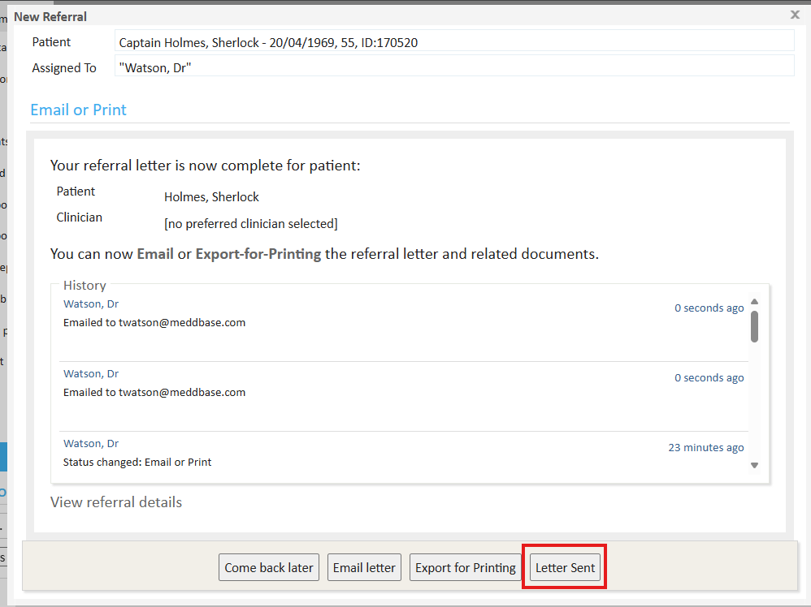
The status of the referral is updated, you can proceed to archive the work items associated with the referral, completing the process.
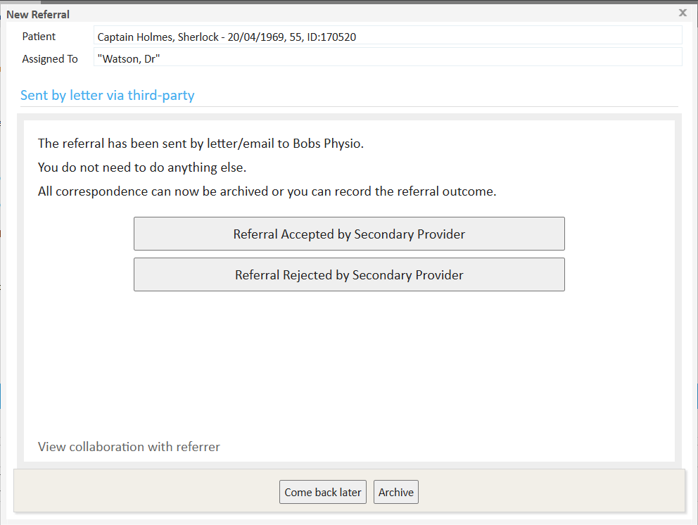